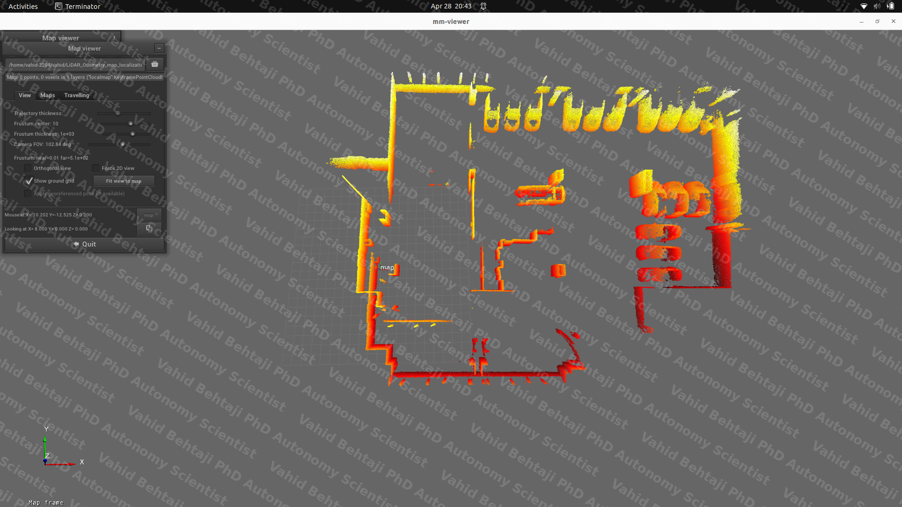
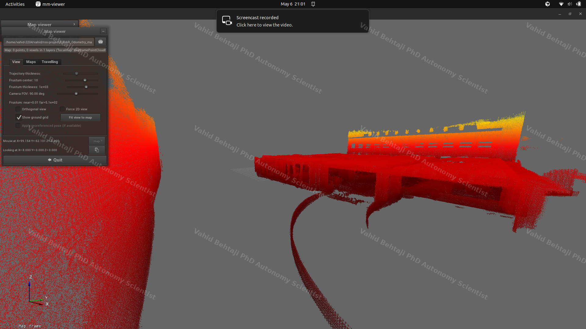

Home / 3D Mapping Demo (RoboSense + MOLA)
Perception Systems
3D Mapping Demo (RoboSense Ground-Filtered LiDAR + MOLA LiDAR Odometry)
End-to-end LiDAR mapping pipeline integrating RoboSense sensing, ground-aware
preprocessing, and MOLA scan-to-map odometry to generate consistent metric 3D
reconstructions in real operational environments.


Perception Systems · LiDAR Mapping · RoboSense + MOLA
RoboSense, Ground Filtering, LiDAR-IMU Fusion, MOLA, GICP, Point Cloud, Odometry, 3D
Reconstruction
YouTube - 3D Mapping Demo (RoboSense + MOLA)
YouTube - Full-Resolution LiDAR + IMU Fusion (Ground Filtering Disabled)
Project Overview
This demonstration presents a production-oriented mapping workflow that transforms
recorded LiDAR sequences into analyzable metric maps. The pipeline is structured for
repeatability, with explicit preprocessing and odometry stages to preserve geometric
consistency across the full trajectory.
What the Demo Shows
- Incremental 3D environment reconstruction from RoboSense LiDAR observations.
-
Ground-filtered point-cloud processing that reduces floor-dominant clutter and
improves structural interpretability.
- Trajectory estimation with stable keyframe-based map accumulation.
- Offline conversion from mapping artifacts to finalized metric map products.
Technical Highlights
- Sensor input: RoboSense LiDAR point-cloud stream.
-
Preprocessing: explicit ground filtering applied prior to odometry to
suppress dominant planar returns and increase feature saliency for registration.
-
Odometry engine: MOLA, configured with a GICP-based LiDAR odometry
pipeline for robust scan-to-map alignment.
-
Data flow: recording -> raw point-cloud extraction -> ground filtering
-> MOLA odometry/mapping -> map conversion -> visualization/inspection.
-
Output artifacts: keyframe map (`.simplemap`) and processed metric map
(`.mm`) for downstream consumption.
Why It Matters
The workflow provides a reliable baseline for digital-twin generation, autonomy stack
preparation, and repeatable site mapping in structured and semi-structured
environments where map quality and trajectory consistency are operationally critical.
Update: Full-Resolution LiDAR + IMU Fusion (Ground Filtering Disabled)
Follow-up run in the same environment using full-resolution RoboSense LiDAR fused with
IMU (motion-aware odometry), with LiDAR ground filtering disabled. This variant
preserves more raw detail (denser surfaces) while also retaining more floor/ground
returns.
- Sensor input: RoboSense LiDAR point-cloud stream + IMU.
-
Preprocessing: ground filtering disabled (full-resolution point cloud
preserved).
- Odometry engine: MOLA LiDAR-IMU scan-to-map odometry.
- Output artifacts: keyframe map (
.simplemap) → metric map (.mm) for MM Viewer.
YouTube - Full-Resolution LiDAR + IMU Fusion run
Previous Project ·
Next Project